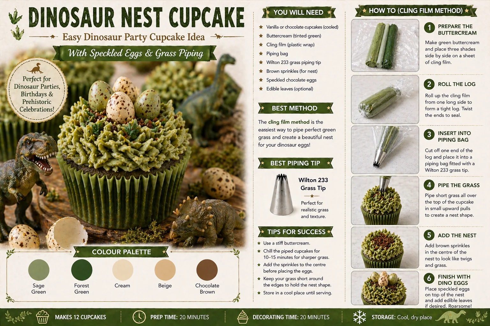
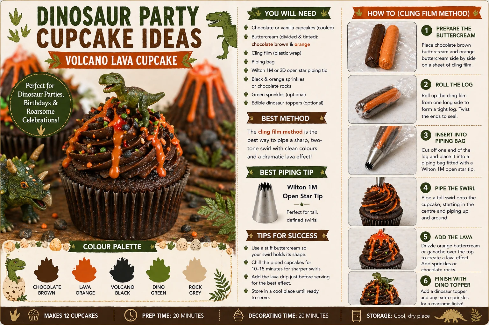

Dinosaur cupcakes are a fun way to add adventure, colour and themed detail to a children's birthday table. With green buttercream, speckled eggs, volcano-style swirls, lava colours and dinosaur toppers, cupcakes can help bring the whole party theme together.
At Little Moment Studio, our focus is balloon styling and celebration setups. We do not make cakes or cupcakes ourselves, but cupcakes are often part of a beautifully styled party table. These ideas are designed as inspiration for a birthday display that complements balloon garlands, backdrops, cakes and dessert table styling.
If you would like cupcakes or a cake to match your balloon display, we are happy to recommend a trusted local cake maker.
This guide covers two beginner-friendly dinosaur cupcake designs:
- Dinosaur Nest Cupcakes
- Volcano Lava Cupcakes
Why Dinosaur Cupcakes Work So Well for Party Tables
Dinosaur cupcakes are ideal for children's birthday parties because they are playful, colourful and easy to theme. They work especially well when the colours repeat across the whole party setup.
| Element | Why It Works |
|---|---|
| Green buttercream | Instantly suggests jungle and dino habitat |
| Speckled eggs | Recognisable dinosaur detail even for young children |
| Lava orange | Adds drama and contrast to the green palette |
| Chocolate brown | Creates earthy depth in both designs |
| Dinosaur toppers | Tie the theme together without needing branded characters |
| Wooden stands and jungle leaves | Complete the rustic party look |
| Design | Style | Difficulty | Best For |
|---|---|---|---|
| Dinosaur Nest Cupcake | Green, textured, natural | Easy | Dinosaur egg and jungle themes |
| Volcano Lava Cupcake | Dark, bold, dramatic | Easy | Volcano, T-Rex and adventure themes |
Dinosaur Nest Cupcakes

The dinosaur nest cupcake uses green buttercream piped with a grass-style tip, finished with speckled chocolate eggs and brown crumbs to create a little nest effect. It is one of the most effective dinosaur cupcake designs because the result looks impressive while the method is genuinely beginner-friendly.
This design works perfectly for jungle dinosaur parties, dinosaur egg themes and softer neutral dinosaur displays.
What You Will Need
| Item | Purpose |
|---|---|
| Chocolate or vanilla cupcakes | Cupcake base |
| Green buttercream | Grass and nest effect |
| Green food colouring | To tint the buttercream |
| Piping bag | Holds the buttercream |
| Wilton 233 grass tip | Creates grass and nest texture |
| Speckled chocolate eggs | Dinosaur eggs in the nest |
| Brown sprinkles or biscuit crumbs | Creates the nest centre |
| Edible leaves | Optional jungle detail |
| Small dinosaur toppers | Optional party detail |
Best Piping Tip
Use a Wilton 233 multi-opening grass tip. This is the tip with many small holes that creates short, textured strands of buttercream — commonly used for grass, fur and nest effects. For more on which tip does what, see our beginner piping tips guide.
How to Make Dinosaur Nest Cupcakes
- Bake and cool the cupcakes. Chocolate cupcakes work especially well because the darker base looks like soil under the green grass.
- Prepare the green buttercream. Tint firm buttercream with green food colouring. You can use one shade or blend two greens — sage, forest, olive or moss all work well. The buttercream must be firm enough to hold texture from the 233 tip.
- Fit the piping bag. Fit a piping bag with the Wilton 233 grass tip. Do not overfill, as this tip needs steady, even pressure.
- Pipe the grass texture. Hold the bag upright over the cupcake. Squeeze gently, pull upwards slightly, then stop and lift away. Repeat short pulls across the surface until the cupcake is fully covered in grass-like texture.
- Create the nest centre. Add a small amount of brown sprinkles, biscuit crumbs or chocolate crumbs in the centre. This creates the look of twigs or a nest base.
- Add the speckled eggs. Press two or three speckled chocolate eggs gently into the centre so they sit securely.
- Finish with details. Add edible leaves, a small dinosaur topper or a light scatter of green and brown decorations. Keep it simple so the eggs remain the focus.
Colour Palette
| Colour | Use |
|---|---|
| Sage green | Main buttercream colour |
| Forest green | Deeper grass detail |
| Cream | Speckled egg base |
| Beige | Natural earthy detail |
| Chocolate brown | Nest crumbs and soil effect |
Colour tip
This palette works beautifully with sage, cream and beige balloon garlands. The earthy greens and naturals echo a jungle dinosaur display without needing bright neon colours or branded decorations.
Volcano Lava Cupcakes

The volcano lava cupcake is more dramatic than the nest design. It uses chocolate or dark buttercream, orange lava-style detail and a dinosaur topper to create a bold volcano effect. This design works especially well alongside the nest cupcakes on the same table, creating contrast between natural jungle softness and volcanic drama.
What You Will Need
| Item | Purpose |
|---|---|
| Chocolate cupcakes | Dark volcano-style base |
| Chocolate brown buttercream | Main swirl colour |
| Orange buttercream or ganache | Lava effect |
| Piping bag | Holds the buttercream |
| Wilton 1M open star tip | Creates a tall volcano swirl |
| Black or orange sprinkles | Rocky volcanic texture |
| Chocolate rocks or biscuit crumbs | Adds rocky detail |
| Small dinosaur toppers | Final decoration |
| Green sprinkles | Optional jungle detail |
Best Piping Tip
Use a Wilton 1M open star tip. This creates a tall, defined swirl that gives the cupcake a strong volcano shape. A Wilton 2D closed star tip will also work for a softer swirl, but the 1M gives a more dramatic volcanic result.
Best Method: Cling Film Two-Colour Swirl
For a clean chocolate and orange lava swirl, use the cling film method. Place chocolate brown and lava orange buttercream side by side on cling film, roll into a log, then place inside the piping bag fitted with the Wilton 1M. This keeps both colours distinct and the orange lava effect clean.
How to Make Volcano Lava Cupcakes
- Bake and cool the cupcakes. Chocolate cupcakes work best as they naturally fit the volcano theme.
- Prepare the buttercream. Make chocolate brown buttercream for the main colour and a smaller amount of orange for the lava. The orange should be bright enough to show clearly against the chocolate.
- Prepare the cling film log. Lay a sheet of cling film flat. Pipe a line of chocolate buttercream and a line of orange side by side. Roll tightly into a log, twist the ends and snip one end.
- Fit the piping bag. Fit a piping bag with the Wilton 1M tip. Insert the log cut-end-first and push gently until buttercream reaches the nozzle.
- Pipe the volcano swirl. Hold the bag upright over the cupcake. Pipe in a circle from the outside edge inwards and upwards to create a tall, dramatic swirl. The orange should show through as lava streaks.
- Add lava drizzle. For extra effect, drizzle orange ganache or orange buttercream down the sides of the swirl.
- Add texture. Scatter black sprinkles, chocolate rocks or biscuit crumbs around the base of the swirl for a rocky, volcanic look.
- Add the dinosaur topper. Place a small dinosaur topper at the side or top of the swirl and press gently into the buttercream.
Colour Palette
| Colour | Use |
|---|---|
| Chocolate brown | Main buttercream colour |
| Lava orange | Lava swirl and drizzle |
| Volcano black | Sprinkles and rocky detail |
| Dino green | Dinosaur topper and jungle accents |
| Rock grey | Optional stone-style decoration |
Display tip
These cupcakes look especially strong on a dark wooden cake stand. The bold chocolate and orange swirl creates a striking contrast alongside the softer green nest cupcakes, giving the table visual variety and energy.
Styling the Dinosaur Dessert Table
Dinosaur cupcakes work best when they repeat the colours of the balloon display and table styling. Mix both designs on the same table to create variety — soft jungle nests alongside bold volcanic drama.
- Green and beige balloon garland
- Orange balloon accents for the volcano theme
- Jungle leaves and eucalyptus stems
- Wooden cake stands and trays
- Dinosaur birthday cake
- Fossil or footprint cookies
- Dinosaur egg cake pops
- Toy dinosaur props
- Rustic table linen in cream or beige
For more on building a full dinosaur party display, see our guide to dinosaur party balloon and dessert table ideas. For general children's party table styling, see how to style a dessert table for a children's party.
Suggested Cupcake Box
Box of 12:
| Quantity | Design |
|---|---|
| 6 | Dinosaur Nest Cupcakes |
| 6 | Volcano Lava Cupcakes |
Box of 6:
| Quantity | Design |
|---|---|
| 3 | Dinosaur Nest Cupcakes |
| 3 | Volcano Lava Cupcakes |
Where to Find Dinosaur Cupcake Decorations
You can make dinosaur cupcake decorations by hand, use silicone moulds, or buy ready-made toppers.
Speckled Dinosaur Eggs
Chocolate mini eggs work well visually and are widely available. Look for small speckled eggs rather than large ones — the scale matters for cupcakes. Always check allergens and age suitability before using.
Useful search terms: speckled chocolate eggs, mini speckled eggs for cupcakes, dinosaur egg cake decorations, edible speckled eggs
Dinosaur Toppers
Check the size carefully before buying — many dinosaur toppers are designed for large cakes rather than cupcakes. Look for miniature dinosaur figures, edible fondant dinosaurs, or small plastic toppers that are explicitly sized for cupcakes. Always confirm whether the topper is edible or decorative only.
Useful search terms: mini dinosaur cupcake toppers, edible dinosaur cake toppers, dinosaur fondant mould, small dinosaur cake decorations
Fossil and Footprint Decorations
Dinosaur footprint cutters, fossil moulds and bone-shaped fondant moulds can add extra detail to the dessert table as cookie or fondant decorations alongside the cupcakes.
Useful search terms: dinosaur footprint cookie cutter, fossil cookie cutter, dinosaur bone fondant mould, dinosaur egg silicone mould
Beginner Tips for Better Results
- Use firm buttercream. The Wilton 233 tip needs firm buttercream to create clean grass texture. If it collapses, chill the buttercream briefly before piping.
- Use small eggs. Large speckled eggs can overwhelm a cupcake. Small ones keep the design proportionate.
- Keep the palette earthy. Sage green, beige, brown and orange look sophisticated. Too many neon colours will cheapen the display.
- Pipe short strokes for the grass. Long strokes flatten instead of creating texture. Short upward pulls are the key to a convincing nest effect.
- Chill before adding toppers. If dinosaur toppers are heavy, chill the piped swirl for 10–15 minutes so it holds firm.
- Press eggs in while soft. Add the speckled eggs before the buttercream sets so they are secure during transport.
- Check all decorations first. Confirm whether toppers are edible, food-safe or decorative — and remove any sticks, wires or skewers before serving to children.
Your Questions Answered
What piping tip is best for dinosaur nest cupcakes?
Use a Wilton 233 multi-opening grass tip. It has many small holes that create short, textured strands — perfect for the grass and nest effect. Pipe short upward pulls across the cupcake until fully covered, then press speckled eggs into the centre.
What piping tip is best for volcano lava cupcakes?
A Wilton 1M open star tip creates a tall, defined swirl that gives the cupcake a strong volcano shape. Start from the outside and pipe inwards and upwards. For a softer look, a Wilton 2D closed star tip also works.
How do you make a two-colour lava swirl?
Use the cling film method. Pipe chocolate brown and lava orange buttercream side by side on cling film, roll into a tight log, twist the ends, then snip one end and place it inside a piping bag fitted with the Wilton 1M tip. Both colours come through together as you pipe.
Can dinosaur cupcakes be made the day before?
Yes. Store them in a covered cupcake box in a cool, dry place. Press speckled eggs in firmly before storage. Dinosaur toppers can also be placed in advance as long as they are stored away from humidity. Adding everything the day before gives the buttercream time to firm around the decorations, which makes them more stable for transport.
What colours work best for a dinosaur birthday table?
Sage green, forest green, beige and chocolate brown create a natural jungle dinosaur look. For a more dramatic table, add lava orange and black for a volcano theme. These palettes work beautifully alongside green and beige balloon garlands and wooden cake stands without needing branded characters.
The nest cupcake brings natural jungle texture to the table while the volcano lava cupcake adds bold drama. Together, they create a display that feels genuinely themed — earthy, adventurous and full of detail — without needing complicated decorating skills.
For more children's birthday cupcake ideas, see our birthday cupcake ideas guide and first birthday balloon ideas. To complete the party look, see our balloon garlands in Kent page or visit our birthday balloon styling page to see packages and availability.
Planning a Dinosaur Party in Sittingbourne or Kent?
Little Moment Studio creates coordinated balloon displays and party setups across Sittingbourne and Kent. We can also recommend a trusted local cake maker to complete your dinosaur dessert table.